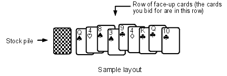

|
The best way to introduce this latest version of Auction is to give just the first few pages of the rules. These are shown below, in a slightly abridged format. If you think the game sounds interesting and you want the complete rules, you can find them in my booklet Auction 2002 and Eleusis, available on my mail order page. Recently (May, 2003) I reprinted the booklet and added some paragraphs about strategy. If you have a booklet from the first printing, you might be interested in these new paragraphs, so I’ve copied them to the bottom of this page. Some of the strategies are not obvious, though you may have already discovered them during your play.
In Auction, you bid cards to obtain other cards. I believe it is the only card game to use this idea, though there are board games in which you bid play money for various items. In Mansfield Park (published in 1814) Jane Austen writes about a game called “Speculation” in which you bid real money to obtain cards. Speculation is no longer played. David Parlett has a discussion of it on his web site www.davidparlett.co.uk, because he was a games consultant for the movie Mansfield Park, and it is also in his book The Penguin Encyclopedia of Card Games. Although the basic concept in Auction is simple, the game does have a lot of rules. I hope that doesn’t put you off. Auction is for two to six players, but it works best for three, four, or five players. Two standard card decks plus four jokers (108 cards in all) are used to form the stock.
 Card combinations: Auction is a “showdown” game. When a round (that is, a hand-of-play) ends, the player with the highest card combination wins the round. This gives the game some of the feel of poker. [A table not included here] lists the card combinations. The combinations were borrowed from both rummy and poker. One interesting thing to note is that, unlike poker, a straight in Auction is ranked higher than a flush. To help me rank these combinations, I wrote a small BASIC program to figure out how hard it is to get each combination. The program showed that in poker, which uses only one deck, it is harder to get a flush then a straight. In Auction, which uses two decks, it is harder to get a straight than a flush. It’s extremely rare for anyone to get an 8-of-a-kind or any of the combinations near the bottom of the list. However, these combinations are theoretically possible, so I included them to make the list complete. Besides determining who is the winner of a hand, these combinations are also used in the bidding for cards.
The deal: For each round, one of the players should be chosen as dealer. The dealer will carry out the chores of shuffling and dealing, but otherwise his role will be the same as the other players.
The auctions: Cards in the face-up row should overlap, but each should be visible. The card at the end of the row—that is, the card that is on top—is the one that is currently up for bid. If a player wins the bidding with a single card, he takes the top card of the face-up row and replaces it with the card he bid. If a player wins the bidding with a pair, then he takes the top card and the card directly under it. If a player wins with a bid of three-of-a-kind or a run-of-three, then he takes the top three cards of the pile. In general, whoever wins the auction takes a number of cards from the top of the row equal to the number of cards in his winning combination. Here is an example of what an auction might sound like: Susan: “I bid a 2.” Jim: “I bid a 6.” Susan: “I bid a pair.”
Jim: “I bid a pair of 10s.”
Susan: “My pair has two kings.” Jim: “I bid three 8s.” Ann: “I bid a flush.” Susan: “I bid a flush with jack high.” Ann: “My flush is also jack high and my second highest card is a 9.” Susan: “That beats my flush.” Charlie: “I bid a run of four.”
That’s the end of the sample pages. As I mentioned before, the complete rules are in Auction 2002 and Eleusis, which is available on my mail order page.
The following is the discussion of strategy I added to the latest printing of the booklet.
Strategy: A player usually divides his hand into two sections. One contains “promising” combinations which, if improved, might win the round. For example,
|